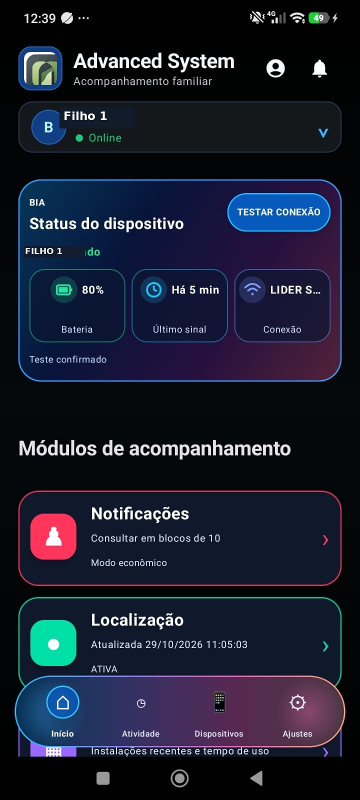
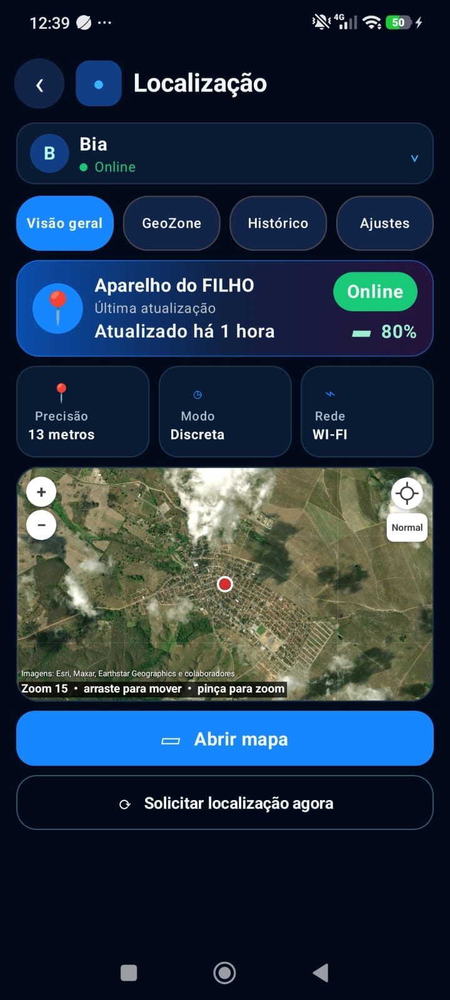
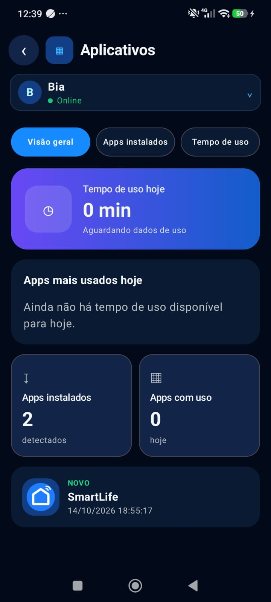
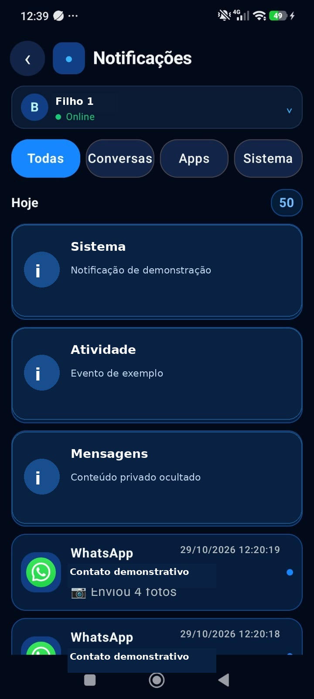
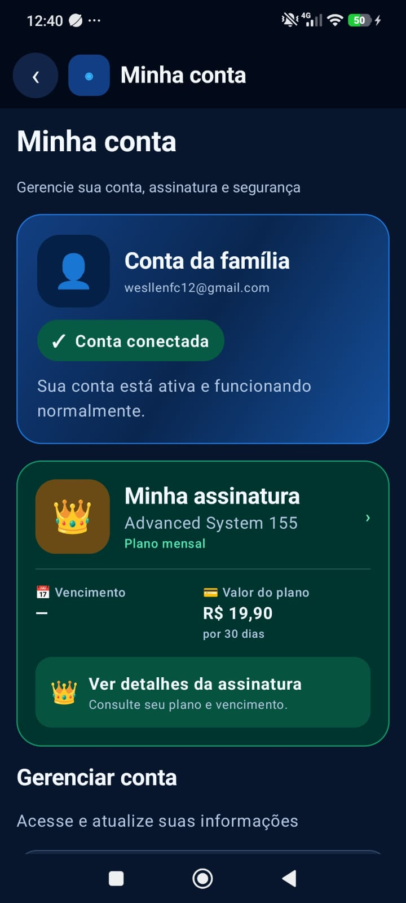

Localização
Consulte a localização recebida do dispositivo e solicite uma atualização quando precisar, conforme as permissões e a conexão.
Acompanhe informações da família em um só lugar. Localização, alertas, histórico e recursos de acompanhamento em uma experiência moderna e organizada.

Conheça algumas das funções exibidas nas telas reais do aplicativo.
Consulte a localização recebida do dispositivo e solicite uma atualização quando precisar, conforme as permissões e a conexão.
Configure áreas no mapa e acompanhe alertas quando uma nova localização recebida indicar presença em uma área cadastrada.
Acompanhe registros de localização para consultar informações anteriores de forma organizada.
Visualize avisos e informações recebidas no aparelho acompanhado, conforme a configuração dos recursos.
Consulte informações sobre aplicativos instalados e registros de uso disponíveis.
Veja o status da conta, as informações da assinatura e o prazo de acesso ao serviço.
A disponibilidade e a atualização dos dados dependem de autorização, permissões, conexão, configurações e limitações do Android. Algumas informações podem sofrer atrasos.
Capturas reais do Advanced System 155. Deslize para conhecer as telas.




O Advanced System 155 foi pensado para o acompanhamento familiar com uso responsável. Os recursos exigem as permissões necessárias e devem ser utilizados com a devida autorização.
As funções de acompanhamento dependem das permissões concedidas nos dispositivos.
O aplicativo apresenta uma área de conta para consultar informações de acesso e assinatura.
Disponibilizamos um canal de contato para dúvidas e solicitações sobre dados pessoais.
Não prometemos localização em tempo real contínua ou proteção absoluta. A coleta e o uso de informações devem respeitar as autorizações aplicáveis.
Entenda exatamente como funciona o acesso ao Advanced System 155.
✦ 3 dias de teste gratuito para novos usuários elegíveis
Novos usuários elegíveis podem experimentar o aplicativo por 3 dias.
Ao terminar o período de teste, o acesso pago depende de um pagamento aprovado.
Cada pagamento aprovado libera um novo período de 30 dias, conforme as regras da conta.
Sem cobrança recorrente automática. Você decide quando realizar um novo pagamento.
O Advanced System 155 para Android está em fase de testes. Quando a versão pública estiver pronta, o download oficial ficará disponível nesta página.
O download está temporariamente indisponível. Não há APK público nesta página.
Dúvidas sobre o aplicativo, pagamentos ou privacidade? Entre em contato.
✉ Enviar e-mailwesllenfc12@gmail.com